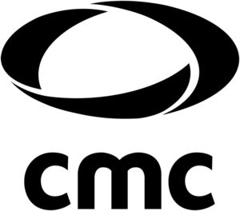

Trade Mark Journal No.2025/031 1 August 2025
WO0000001854231 (3,5,10,35,40)
Office of origin: Germany
Date of International Registration:17 January 2025
Date of designation in the UK:
17 January 2025

The mark contains the colour black.
International priority date claimed: 1 August 2024
(Germany)
- Class 3
- Household bleach; laundry preparations; cleaning, polishing, scouring and abrasive preparations; soap; perfumery; ethereal oils; body and beauty care products; non-medicated cosmetics; cosmetic products for skin and hair care; hair lotions; shampoos; dentifrices; cotton swabs for cosmetic purposes; cotton wool for cosmetic purposes; wet wipes made of paper and/or cellulose for cosmetic purposes; baby wipes impregnated with cleaning preparations; moist wipes impregnated with a cosmetic lotion; adhesives for cosmetic purposes; cleaning cloths impregnated with a detergent; cotton pads or cloths impregnated with disinfectants; plasters for cosmetic purposes.
- Class 5
- Pharmaceuticals; medical and veterinary preparations; sanitary preparations for medical purposes; chemical reagents for medical or veterinary purposes; diagnostic preparations for medical purposes; diagnostic preparations for veterinary purposes; pharmaceutical preparations; sanitary preparations for medical purposes; dietetic preparations adapted for medical use; disinfectants; disinfectants for hygiene purposes; diagnostic biomarker reagents for medical purposes; diagnostic strips for testing breast milk for medical purposes; plasters, materials for dressings; adhesive plasters; adhesive plasters for medical purposes; wound care material; compresses; bandages for dressings; medical dressings; gauze for dressings; surgical dressings; cotton swabs for medical purposes; sanitary tampons; sanitary preparations for medical purposes [personal hygiene], excluding medicated toiletries; sanitary panties; pantyliners; wipes impregnated with disinfectants for hygiene purposes; sanitary pads; sanitary pads for feminine hygiene; breast- nursing pads; absorbent cotton for medical purposes; nursing pads; cotton wool for medical use; absorbent underpants for incontinence; pharmaceutical preparations for skin care; medicated skincare preparations and medicated haircare products; medicated hair lotions; medicated hair growth stimulants; medical soap; diapers for incontinence; diaper pants for babies; diaper changing mats, disposable, for babies; filled first aid kits; fungicides; herbicides; healing mud for medical purposes; mud for baths for medicinal purposes.
- Class 10
- Medical apparatus and instruments; surgical apparatus and instruments; urological apparatus and instruments; veterinary apparatus and instruments; dental apparatus and instruments; massage apparatus; artificial limbs; artificial eyes; artificial teeth; orthopedic articles; therapeutic and assistive devices adapted for persons with disabilities; knee bandages [supportive]; orthopedic bandages for joints; bandages, elastic; compression clothing; elastic stockings for surgical purposes; stockings for varices; orthopaedic belts; orthopedic footwear; orthopaedic soles; plaster casts for orthopedic purposes; thread, surgical; needles for surgical purposes; thermometers for medical purposes; gloves for medical purposes; gloves for massage; clothing especially for operating rooms; masks for use by medical personnel; protective masks for medical purposes; ventilation masks for medical purposes; reusable hygiene masks made of gauze; sanitary masks; surgical drapes; sterile sheets [cloths] for surgical purposes; beds, especially for medical purposes; air mattresses for medical purposes; delivery mattresses; orthopedic and medical mattresses and pillows; cover cloths made of absorbent cellulose wadding for use on hospital beds; bed pads made of cellulose, nonwovens, plastics, textiles and/or rubber for medical purposes; catheters; portable hand urinals [for medical purposes]; urinals for medical purposes [vessels]; drainage pipes for medical purposes; containers specially made for medical waste; cooling pads for first aid purposes; heat packs for first aid purposes; arterial blood pressure monitors; cholesterol meters; glucose meters; pulse measuring devices; body composition measuring devices; body fat monitors; heart signal monitors; inhalers for medical use; condoms; breast pumps; maternity belts for medical purposes; apparatus, devices and articles for nursing infants; teething rings; feeding bottle teats.
- Class 35
- Advertising; business management, organization and administration; marketing research; opinion polling; cost price analysis; business and organizational consulting; retail and wholesale services, including online, in relation to pharmaceutical, medical and veterinary articles as well as sanitary preparations, hygiene preparations, toiletries, cleaning products, detergents, cosmetics and beauty products.
- Class 40
- Customized production of cosmetics for others; material processing of cotton and pulp for the production of hygiene, cosmetic and medical products.
CMC Consumer Medical Care GmbH
Representative: PAUL HARTMANN AG, CO-LE-CLT-DE, Paul-Hartmann-Str. 12 , 89522 Heidenheim, GERMANY